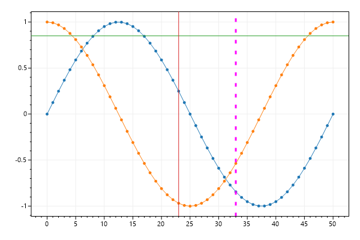
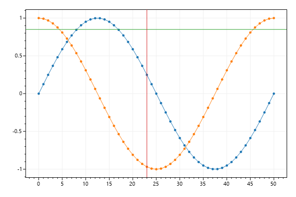
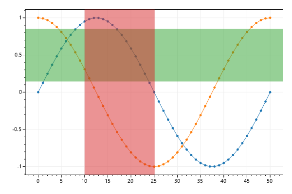

ScottPlot Cookbook: Plottable - Axis Line and Span
⚠️ Documentation is version-specific: This page was generated forScottPlot 4.1.4-beta
Additional documentation and more version-specific cookbooks are on the ScottPlot Website
Axis Line
An axis line marks a position on an axis. Axis lines extend to positive and negative infinity on the other axis.var plt = new ScottPlot.Plot(600, 400);
// plot sample data
plt.AddSignal(DataGen.Sin(51));
plt.AddSignal(DataGen.Cos(51));
// add axis lines
plt.AddHorizontalLine(.85);
plt.AddVerticalLine(23);
// customize axis lines with optional arguments
plt.AddVerticalLine(x: 33, color: Color.Magenta, width: 3, style: LineStyle.Dot);
plt.SaveFig("axisLine_basics.png");

Draggable Axis Lines
In GUI environments, axis lines can be draggable and moved with the mouse. Drag limits define the boundaries the lines can be dragged.var plt = new ScottPlot.Plot(600, 400);
// plot sample data
plt.AddSignal(DataGen.Sin(51));
plt.AddSignal(DataGen.Cos(51));
// add axis lines and configure their drag settings
var hLine = plt.AddHorizontalLine(.85);
hLine.DragEnabled = true;
hLine.DragLimitMin = -1;
hLine.DragLimitMax = 1;
var vLine = plt.AddVerticalLine(23);
vLine.DragEnabled = true;
vLine.DragLimitMin = 0;
vLine.DragLimitMax = 50;
// you can access the position of an axis line at any time
Debug.WriteLine($"Vertical line is at X={vLine.X}");
plt.SaveFig("axisLine_draggable.png");

Axis Span
Axis spans shade a portion of one axis. Axis spans extend to negative and positive infinity on the other axis.var plt = new ScottPlot.Plot(600, 400);
// plot sample data
plt.AddSignal(DataGen.Sin(51));
plt.AddSignal(DataGen.Cos(51));
// add axis spans
plt.AddVerticalSpan(.15, .85);
plt.AddHorizontalSpan(10, 25);
plt.SaveFig("axisSpan_quickstart.png");

Draggable Axis Span
Axis spans can be dragged using the mouse. Drag limits are boundaries over which the edges of spans cannot cross.var plt = new ScottPlot.Plot(600, 400);
// plot sample data
plt.AddSignal(DataGen.Sin(51));
plt.AddSignal(DataGen.Cos(51));
// dragging can be enabled and optionally limited to a range
var vSpan = plt.AddVerticalSpan(.15, .85);
vSpan.DragEnabled = true;
vSpan.DragLimitMin = -1;
vSpan.DragLimitMax = 1;
// spans can be configured to allow dragging but disallow resizing
var hSpan = plt.AddHorizontalSpan(10, 25);
hSpan.DragEnabled = true;
hSpan.DragFixedSize = true;
plt.SaveFig("axisSpan_draggable.png");